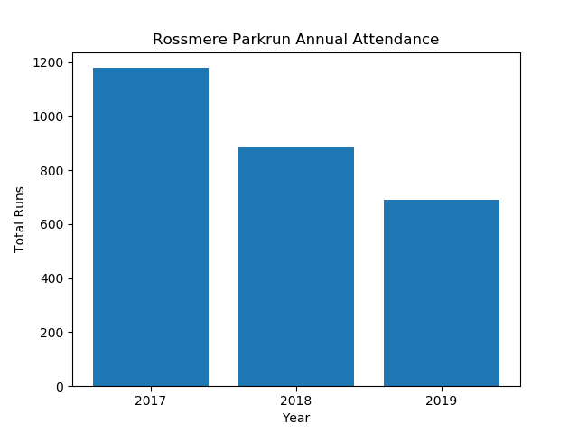
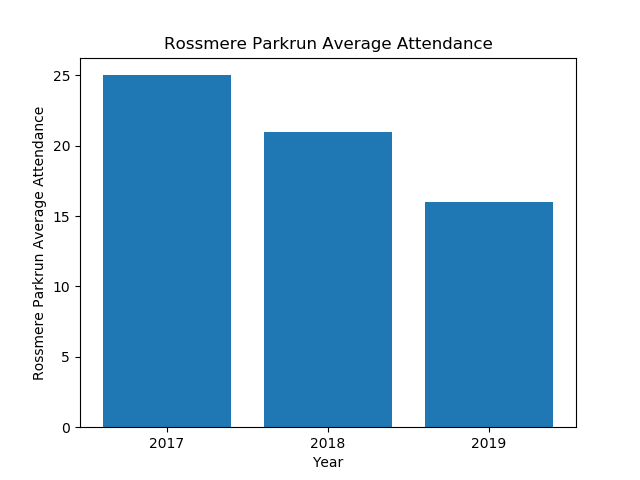
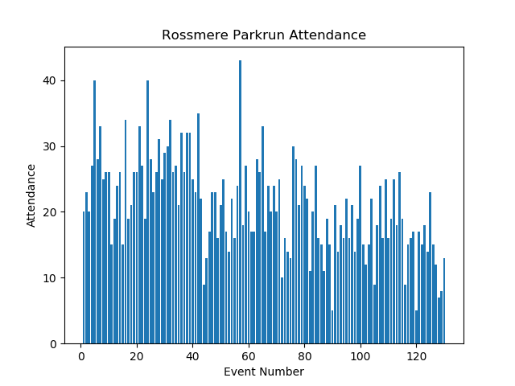
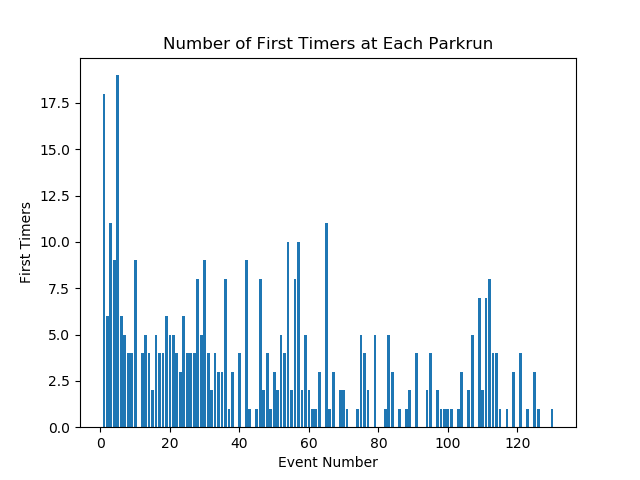
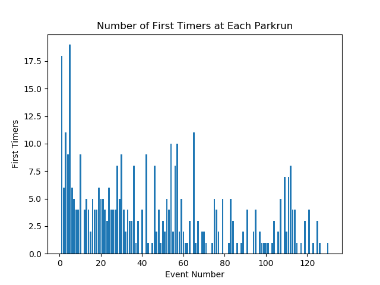

Annual Summary for Rossmere Parkrun
Annual Attendance
| Year | Number of Events | Average Attendance | Number of Runs | Number of Volunteers | Number of PBs | Number of First Timers |
|---|
| 2017 | 46 | 25 | 1178 | 835 | 217 | 233 |
| 2018 | 42 | 21 | 884 | 668 | 183 | 113 |
| 2019 | 42 | 16 | 691 | 564 | 156 | 76 |


Statistics for Events between 01/01/1970 and 31/12/2100
Max Attendance = 43, Min Attendance = 5

 

Top Participants
Top Volunteers
Total number of volunteering events
| Name | Number of Runs | Number of Volunteers |
|---|
| 1 | Audrey STREETING | 0 | 111 |
| 2 | Steven MORRISON | 0 | 108 |
| 3 | Heidi MORRISON | 0 | 104 |
| 4 | Carl MARCHANT | 0 | 90 |
| 5 | Michael STREETING | 0 | 79 |
| 6 | Bryan LANGSTON | 0 | 61 |
| 7 | Yvonne TINDALE | 0 | 56 |
| 8 | David NOBLE | 0 | 53 |
| 9 | Cheryl LAYCOCK | 0 | 44 |
| 10 | Alison EATON | 0 | 43 |
| 11 | Ann SMITH | 0 | 43 |
Most Runs
Total Number of Runs in the period
| Name | Number of Runs | Number of Volunteers |
|---|
| 1 | Macie SMITH | 80 | 0 |
| 2 | Alexander ORGAN | 59 | 0 |
| 3 | Emilie- Jaye NOBLE | 56 | 0 |
| 4 | Noah SWINBOURNE | 56 | 0 |
| 5 | Jenson WILLIAMS | 55 | 0 |
| 6 | Sophie PISCHOS | 55 | 0 |
| 7 | Matthew PISCHOS | 51 | 0 |
| 8 | Evan HUGHES | 44 | 0 |
| 9 | Joseph SWINBOURNE | 43 | 0 |
| 10 | Zac BEDDING | 41 | 0 |
Time on Feet
Total time spent running in the period.
| Name | Time on Feet (hours) |
|---|
| 1 | Macie SMITH | 17.3 |
| 2 | Sophie PISCHOS | 16.4 |
| 3 | Noah SWINBOURNE | 12.0 |
| 4 | Alexander ORGAN | 11.2 |
| 5 | Matthew PISCHOS | 10.7 |
| 6 | Jenson WILLIAMS | 10.0 |
| 7 | Joseph SWINBOURNE | 9.5 |
| 8 | Isabelle CARLILE | 9.0 |
| 9 | Emilie- Jaye NOBLE | 8.6 |
| 10 | Evan HUGHES | 8.4 |
Keenest
Total Participation (run + volunteer). Note: Running and volunteering on the same day counts.
| Name | Number of Runs | Number of Volunteers | Total |
|---|
| 1 | Audrey STREETING | 0 | 111 | 111 |
| 2 | Steven MORRISON | 0 | 108 | 108 |
| 3 | Heidi MORRISON | 0 | 104 | 104 |
| 4 | Carl MARCHANT | 0 | 90 | 90 |
| 5 | Macie SMITH | 80 | 0 | 80 |
| 6 | Michael STREETING | 0 | 79 | 79 |
| 7 | Bryan LANGSTON | 0 | 61 | 61 |
| 8 | Alexander ORGAN | 59 | 0 | 59 |
| 9 | Emilie- Jaye NOBLE | 56 | 0 | 56 |
| 10 | Noah SWINBOURNE | 56 | 0 | 56 |
Consistency
Smallest variation (standard deviation) in run times.
| Name | Run Time SD (sec) | Number of Runs |
|---|
| 1 | Emma MCNEILL | 12.3 | 10 |
| 2 | Charlie LEAK | 13.5 | 12 |
| 3 | Alex LAKE | 15.6 | 11 |
| 4 | George CRAGGS | 16.9 | 17 |
| 5 | Matilda-Mae ELSDON | 18.5 | 10 |
| 6 | Emilie- Jaye NOBLE | 19.2 | 55 |
| 7 | Zac BEDDING | 20.6 | 39 |
| 8 | Ethan JEFFRIES | 21.0 | 32 |
| 9 | Alexander ORGAN | 21.4 | 59 |
| 10 | Harley ROWLAND | 28.6 | 26 |